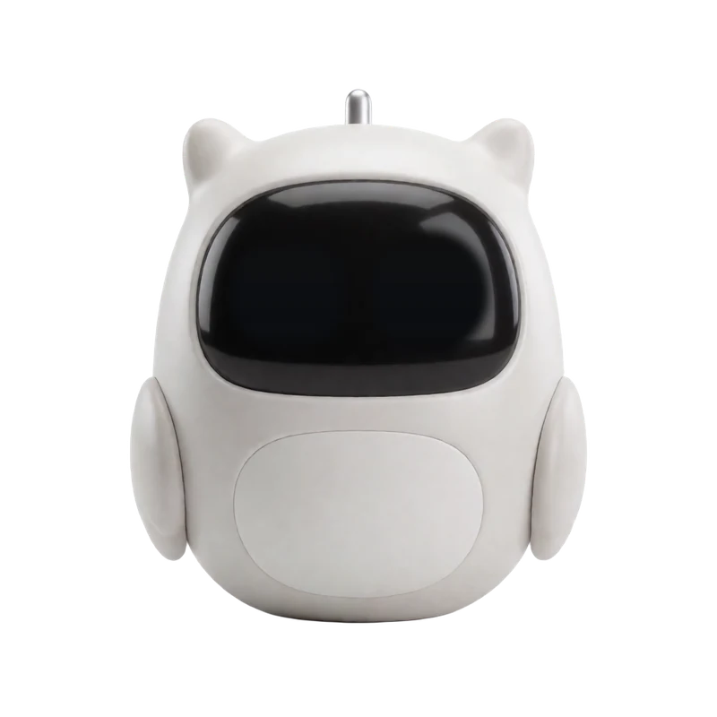

הכירו את שחר,
עמית ה-AI שלכם.
שחר עובד לצד הצוות במכללה: מזהה מוקדם סטודנטים בסיכון לנשירה, עונה לסטודנטים מסביב לשעון ומכין לכל אחד בדיוק את מה שצריך כדי לעזור בזמן.

השיחות להמחשה והנתונים סינתטיים. תיבת ההודעה אמיתית: כתבו שאלה ושחר יענה מהתקנונים דרך המודל המקומי.
איך הצוות עובד עם שחר
בדיוק איפה שהצוות עובד
שחר נמצא בדשבורד, בדפדפן ובסיכום הבוקר. מוכן בכל ערוץ, שרשור או הודעה ישירה ברגע שצריך אותו.
מדברים על זה
שואלים, מוסיפים הקשר ומעמיקים. שחר מסביר כל ציון סיכון דרך שלושת הגורמים שהובילו אליו, וממשיך את השיחה כשהיא מתפתחת.
מתובנה לפעולה
שחר מכין זימון לשיחה, משייך לרכזת וקובע מעקב. ההתערבות מתחילה מחר בבוקר, לא בסוף הסמסטר.
מחובר לכל מערכות הליבה.
שחר מתחבר למכלול, ל-Moodle, לקומבוקס, ל-Priority, למידע האישי ול-Microsoft 365, ועובד על כולן בבת אחת. שאלה שחוצה כמה מערכות חוזרת כתשובה אחת.
עמית לכל הצוות.
רוב כלי ה-AI חיים בצ׳אט פרטי שרק אתם רואים. שחר עובד בגלוי, בערוצים המשותפים של הרכזות, הדיקנאט וההנהלה. כל אחד יכול להצטרף לשרשור, להוסיף את מה שהוא יודע או להמשיך מאיפה שעמית עצר.
תמיד לומד, אף פעם לא מנחש.
שחר לומד איך המכללה באמת עובדת מתוך הדרך שבה אתם כבר מדברים: המונחים, סדרי העדיפויות, את מי לצרף. בלי הגדרות ובלי אימון. מתקנים אותו פעם אחת, והתיקון נשאר. ואם המידע לא נמצא בתקנונים, הוא אומר את זה.
בנו את צוות ה-AI שלכם.
מתארים את העמית שצריך בשיחה עם שחר. נותנים לו שם, תפקיד ורק את הגישה שהוא צריך, ואז מתייגים אותו כמו כל אחד אחר בצוות.
בנוי על תיקון 13.
מאובטח כברירת מחדל.
מאגר הסטודנטים מסווג ברמת אבטחה גבוהה, ולכן כל רכיב בשחר נבנה סביב צמצום מידע, הרשאות לפי תפקיד ויומן גישה. והמודלים רצים על המחשבים של המכללה, כך שהמידע לא יוצא החוצה.
מוכנים להכיר את שחר?

לאשר לשחר גישה לנתוני הפקולטה?
1.נכנסים עם הרשאה
כניסה אחת עם החשבון של המכללה, ואישור הגישה לפי התפקיד שלכם. אין מה להתקין ואין מה להגדיר.
מישהו יכול להוציא את נתוני הנוכחות של שנה א'?
2.מתייגים את @שחר בכל מקום
בכל ערוץ, שרשור או הודעה ישירה. שחר עונה מההודעה הראשונה, עם ההקשר של הערוצים שלכם.
3.מחברים מערכות כשמוכנים
שחר שימושי כבר עם התקנונים בלבד. מחברים את מכלול, Moodle ו-Priority כשרוצים שיעשה יותר.